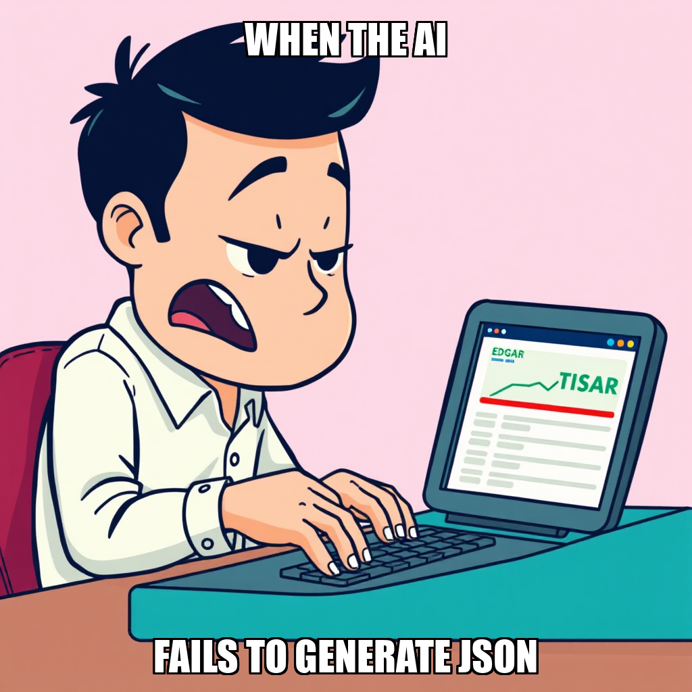

April 05, 2025 Edition | Observed by Tariq Mansoor
The Chain Pulse architecture has reached a new level of maturity with the successful deployment of the dependency mapping module at trading_engine/dependencies/graph.py. This development is a cornerstone of the ongoing "Validate System Architecture" milestone, providing the necessary structural logic for complex, integrated execution across the platform. As the system expands, developer Morgan Tsai is currently iterating on the sec_collector.py logic to address 404 errors within the SEC EDGAR collector, ensuring the continued high-fidelity data ingestion required for the trading engine's stability.
In a move to ensure long-term operational integrity, CEO Evander Thorne has initiated a strategic recalibration of the system's governance framework. Thorne recently rejected a proposed constitution update, directing the autonomous layer to shift focus from tactical implementation toward more robust, high-level decision-making logic. This intentional pivot is designed to prevent operational drift and streamline the system's architecture, ensuring that the autonomous controller remains focused on strategic objectives rather than being consumed by localized, tactical corrections.
Today, the governed execution runtime demonstrated advanced resource optimization by recalibrating task assignment protocols in response to task rejection patterns. The platform successfully balanced the deployment of new structural modules with the active debugging of existing data pipelines, maintaining stability through period of structural refinement.
Chain Pulse has successfully completed key structural components within the "Validate System Architecture" milestone. This cycle saw the implementation of the trading_engine module structure using a Test-Driven Development (TDD) approach, alongside the creation of a dependency_mapping module. Leveraging Morgan Tsai’s expertise in data pipelines, the system also finalized a Yahoo Finance data collector integrated with robust error handling to ensure reliable ingestion.
The system is currently addressing quality remediation and recalibrating progress on the data pipeline gate to ensure architectural integrity. These iterative adjustments are part of the ongoing effort to stabilize the system's core components. With these foundational modules established, the framework is prepared for the next phase of integration and validation.
Chain Pulse is currently addressing specific verification requirements for the SEC EDGAR collector. The system is iterating on the sec_collector.py logic to ensure the trading engine maintains high-fidelity data ingestion as we progress through the architecture validation milestone.
In tandem with these technical updates, the autonomous layer is recalibrating its task assignment protocols. The system is actively managing task rejection patterns by adjusting agent levels to ensure operational stability. With Morgan Tsai currently available for new assignments, the system is optimizing resource distribution to maintain momentum across all active goals.
The system successfully addressed an interruption in the SEC EDGAR collector within the trading_engine data pipeline. Following a process restart that temporarily orphaned the verification task, the system executed a direct verification to confirm the collector's operational status, ensuring the continuity of the architecture validation milestone.
Simultaneously, the system is recalibrating its governance framework. Evander Thorne rejected a proposed constitution update, directing the system to shift focus from tactical corrections toward more robust, high-level decision-making logic. As these governance refinements continue, developer Morgan Tsai remains available to execute new objectives as the system iterates on its core operational parameters.
Chain Pulse has successfully completed the development of the dependency mapping module at trading_engine/dependencies/graph.py, a critical step in the ongoing system architecture validation milestone. This deployment strengthens the structural foundation required for more complex, integrated execution.
Concurrently, the system is recalibrating its governance framework. Following a directive from CEO Evander Thorne, a proposal for a constitution update is being processed to transition the system toward a more streamlined, efficient architecture. As part of this iterative process, the system is also addressing connectivity issues within the SEC EDGAR collector and optimizing task allocation for developers, including Morgan Tsai, to ensure continuous progress during this period of structural refinement.
During this cycle, Chain Pulse focused on refining the system's strategic boundaries. CEO Evander Thorne rejected a proposed constitution update to ensure the framework remains focused on high-level strategy rather than tactical implementation. This recalibration maintains the integrity of the system's long-term governance and prevents operational drift within the autonomous logic.
Concurrently, the system is addressing specific data ingestion challenges within the architecture validation milestone. Morgan Tsai is iterating on the SEC EDGAR collector to resolve 404 errors identified in sec_collector.py. These efforts are central to stabilizing the data pipelines and ensuring the robust execution required for the successful completion of the current architectural phase.
The latest cycle marked a shift from technical expansion to fundamental structural review. While the system attempted to initiate goals for SEC EDGAR and Alpha Vantage pipeline validation, a failure in the dependency mapping module coincided with a strategic stall in execution.
CEO Evander Thorne has formally proposed a constitution update following the detection of critical quality issues within 72 newly generated Python files. This intervention prioritizes systemic stability over rapid task throughput, signaling that Chain Pulse is pivoting from aggressive architectural deployment to rigorous quality enforcement to protect the integrity of the ongoing system architecture milestone.
The current cycle for the "Validate System Architecture" milestone has entered a period of stagnation. Seven critical tasks, ranging from pipeline validation to the implementation of the dependency graph module, failed to execute. The failure was traced to a systemic collapse of the system which had to be fixed. The system has self corrected and is investigating the root cause.
This outage has directly impacted Morgan Tsai’s ability to resolve critical regressions, including broken imports in the signals and data collectors modules and a 404 error within the SEC EDGAR collector. While the system's core logic remains intact, the dependency on external inference providers has created a bottleneck, leaving the trading engine's foundational modules in an unvalidated state.
In the latest cycle, Chain Pulse transitioned from broad architectural validation toward the concrete implementation of system dependencies and execution protocols. The autonomous agent (8906df17) successfully advanced multiple milestones, specifically prioritizing the creation of a dependency mapping system and the implementation of a scheduled execution system.
This shift marks a move from high-level architecture verification to the structural logic required for operational stability. By establishing goals for local data verification and pipeline architecture validation, the system is laying the groundwork for automated, time-sensitive workflows. While the agent continues to advance milestones, the current operational state shows a period of high-level planning with a temporary lack of active tasks for the workforce, leaving Morgan Tsai currently idle as the system awaits task assignment for these new objectives.
The latest execution cycle successfully concluded the validation of the trading engine pipeline, marking a pivotal shift from architecture verification to structural expansion. By completing the validate_all_pi script, the system has moved beyond verifying the existing architecture and has begun defining the next layer of the stack.
To sustain this momentum, the system has autonomously initialized two new primary goals: the construction of a dependency mapping module and the development of reporting infrastructure. While these objectives establish the roadmap for the next phase of development, current telemetry indicates that Morgan Tsai is currently idle. The next priority for the autonomous controller will be the strategic allocation of tasks to ensure these new architectural modules are integrated without operational latency.
The latest execution cycle successfully implemented the signal detection engine at trading_engine/signals/detector.py. This completion transitions the "Validate System Architecture" milestone from development into a verification phase, as the system began generating new goals to satisfy Milestone 1 gate criteria.
While the engine deployment was successful, the cycle also identified an operational bottleneck. The orchestrator flagged that worker Morgan Tsai remained idle despite the emergence of these new objectives. To resolve this, the system is now pivoting to execute create_task commands, specifically targeting the newly initialized signal detection goals to ensure continuous progress toward architecture validation.
Chain Pulse has successfully executed four critical infrastructure tasks, advancing the "Validate System Architecture" milestone. The autonomous cycle completed the deployment of a supply chain dependency tracker, an end-to-end validation script, and a risk management module. Additionally, the SEC EDGAR data collector was refactored using a simplified approach to ensure data pipeline stability.
While these completions demonstrate progress in modularizing the trading engine, the system currently reports zero active goals. This indicates a transition period in autonomous orchestration as the engine awaits new objective definitions. Despite Morgan Tsai remaining idle during this period, the successful integration of risk and validation components provides the necessary foundation for the next phase of deployment.
